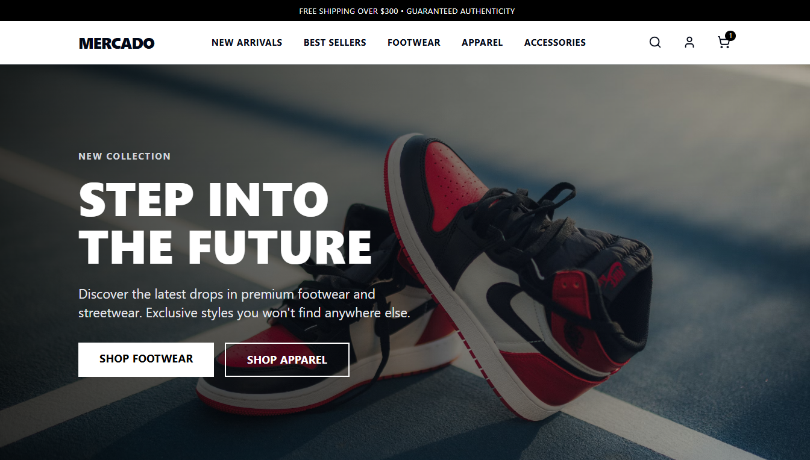
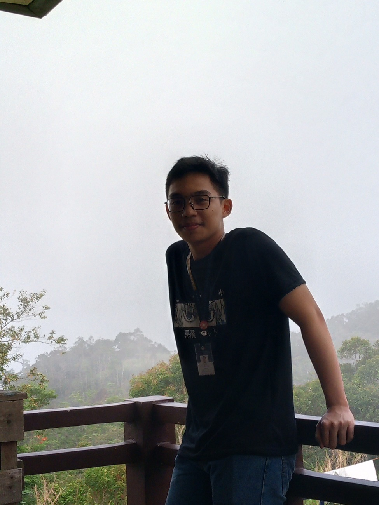
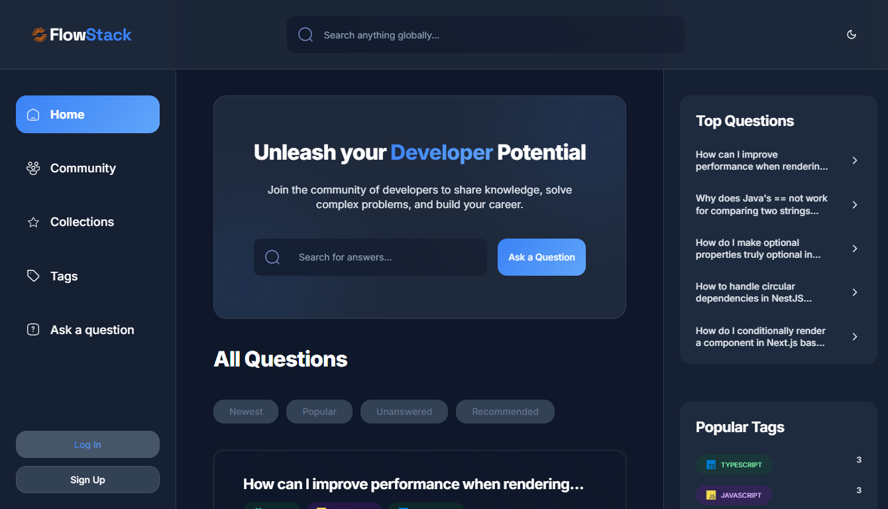
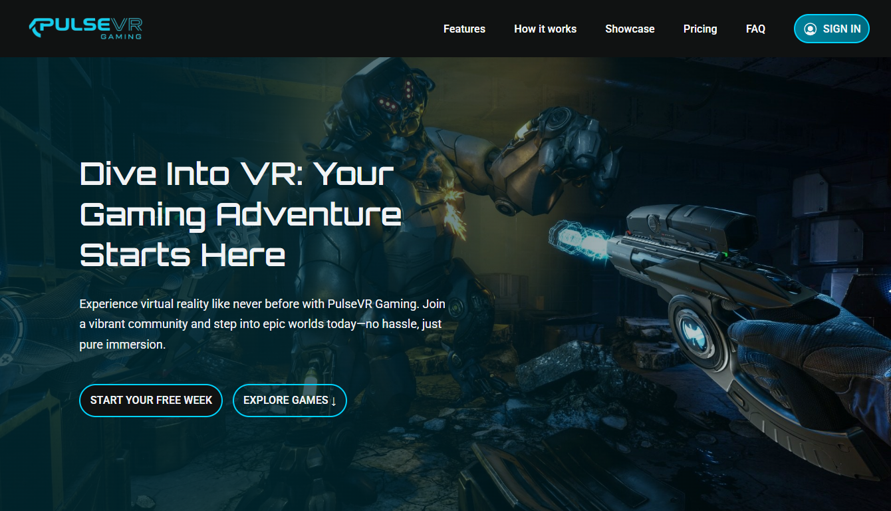

Mercado
An e-commerce store with a type-safe GraphQL frontend. Cart, checkout and an admin dashboard.
TypeScript and TanStack up front, NestJS and Postgres behind it, all in Docker.
I wrote down everything I've worked on and pointed this chat at it. Ask it something. It's faster than scrolling, and it knows the parts that aren't on the page.

Full-stack and AI engineer. Lately I build the parts of a product that talk back, like an admissions assistant that remembers students between sessions.
I'm Janriz. I write TypeScript for a living and GDScript when nobody's paying.
Most of my work sits where a normal web app meets a language model. At LogoLife I built Athena, an assistant that remembers students across sessions and reads their live data through an MCP server I kept on a short leash. Around it I shipped crawlers, dashboards and load tests.
I like shipping the boring parts first. They're usually the parts that break.
Four roles, about a year and ten months in total.
Built Athena and the crawler that feeds it. Two rounds of vector dedup cut the enrichment bill by 70%.
Worked on RAG ingestion and streaming chat for an AI shopping assistant. One client's sitewide conversion went up 11% in its first six days.
Wrote ASP.NET Core endpoints for a warehouse system, then built the delivery tracking page on top of them.
Kept the yearbook's Laravel site running and wrote Python tools for the rest, including an OCR script and a bulk mailer for toga photos.
These live inside other companies' products, so you get how they work and not what they look like.
⊘ NDA. Patterns only, no screenshots.

An e-commerce store with a type-safe GraphQL frontend. Cart, checkout and an admin dashboard.
TypeScript and TanStack up front, NestJS and Postgres behind it, all in Docker.
A StackOverflow clone. Post questions, comment, search. NextAuth handles sign-in and there's an analytics page.
Next.js and MongoDB, styled with Tailwind.

Landing page for a VR startup that doesn't exist. Mobile-first, with a lot of motion. React and Tailwind.
